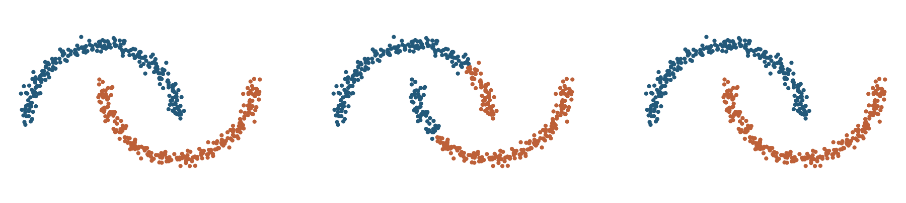
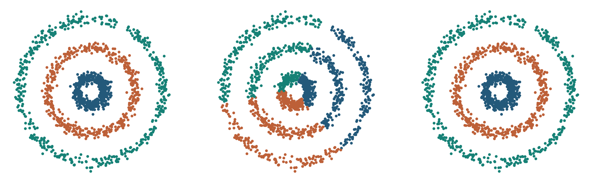

Same points, different representation
Each row shows the same points in their original coordinates. K-means groups by distance to a centroid, which suits compact groups. On these shapes it divides the plane through the clusters. Spectral clustering first represents the points by their graph connections, then applies k-means in that new space.
Halfmoon


Bullseye


Adjusted Rand Index (ARI) measures agreement with the supplied reference labels. A score of 1 means perfect agreement. Values near 0 mean little agreement beyond chance. I used the reference labels after fitting to score the assignments and align colors across each row.
How the graph changes the problem
- Connect nearby points. Treat each point as a node. A nearest-neighbor graph links points that are close even when the whole cluster bends or wraps around another one.
- Represent the connections. Normalize the affinity matrix and use its leading eigenvectors to give each point a new set of coordinates, its spectral embedding.
- Cluster in that space. Run k-means on the embedding, with two groups for Halfmoon and three for Bullseye. The new coordinates help separate groups that are hard to divide with centroids in the original plane.
A sparse graph split the rings
At five neighbors, the Bullseye graph had five connected components for three reference rings. Parts of the rings became separate pieces. The saved ARI fell to 0.923. A change in numerical settings could change that score, while the five-component split held across reruns.
At 10, 15 and 20 neighbors, there were three components, and the clusters matched the reference rings. Halfmoon scored 1.0 at all four settings. A separate Gaussian RBF affinity, which weights pairs by distance, also scored 1.0 on both examples.
| Neighbors | Components | Saved ARI |
|---|---|---|
| 5 | 5 | 0.923 |
| 10 | 3 | 1.0 |
| 15 | 3 | 1.0 |
| 20 | 3 | 1.0 |
Complete results · Original comparison including RBF

What this benchmark shows
The examples use synthetic points and known group counts. The results describe recovery on these two datasets. On other data, affinity and neighborhood choices can change the answer, and the dense eigendecomposition limits scale.
The coursework compared k-means, nearest-neighbor graphs and Gaussian affinities. The portfolio revision separated neighbor count, embedding dimension and cluster count, and added graph connectivity checks. Revision history
Code and supporting results
Python analysis · Graph tests · Methods and reproduction notes · Input requirements